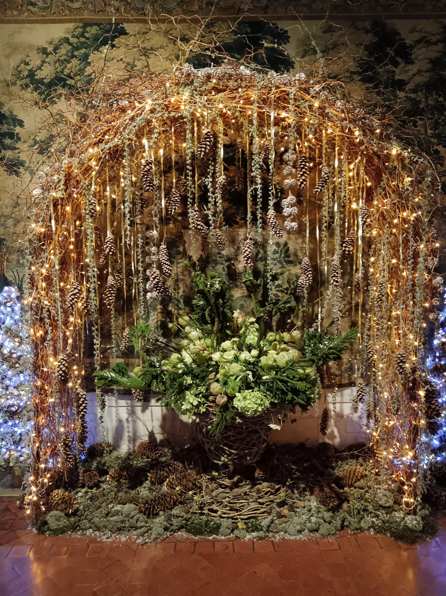
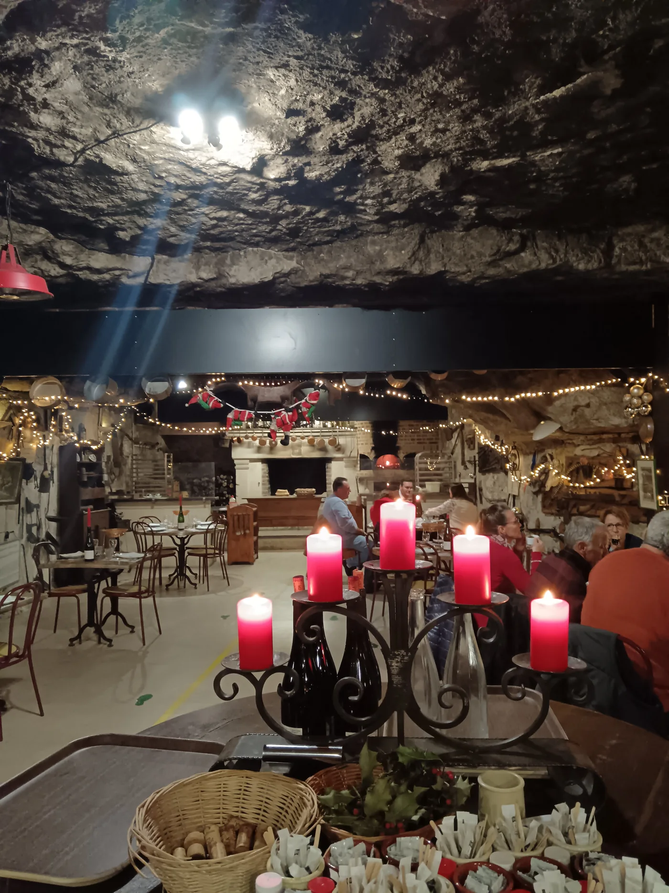
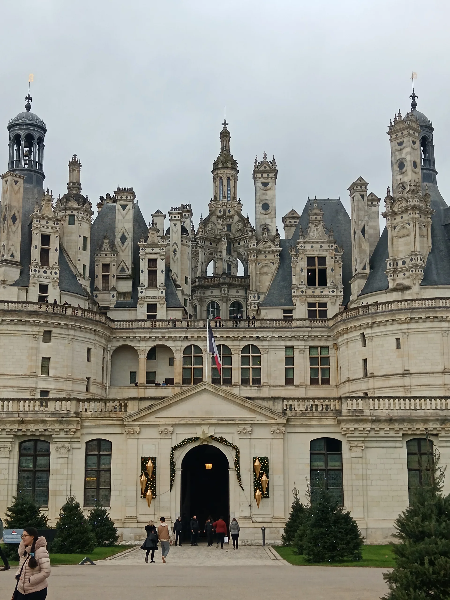
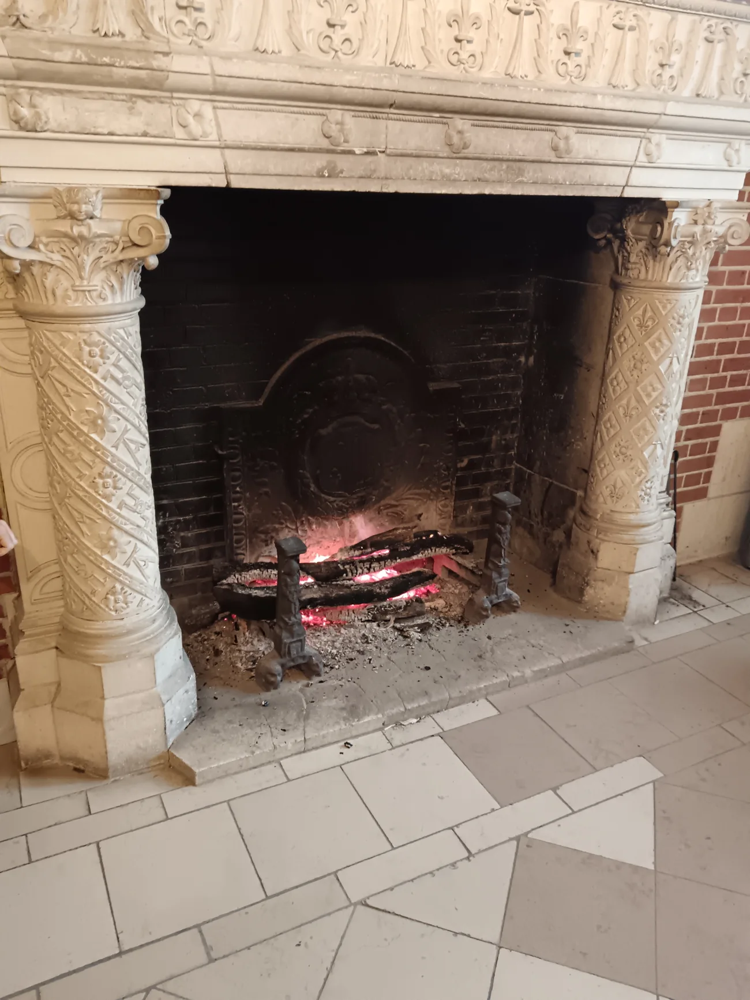
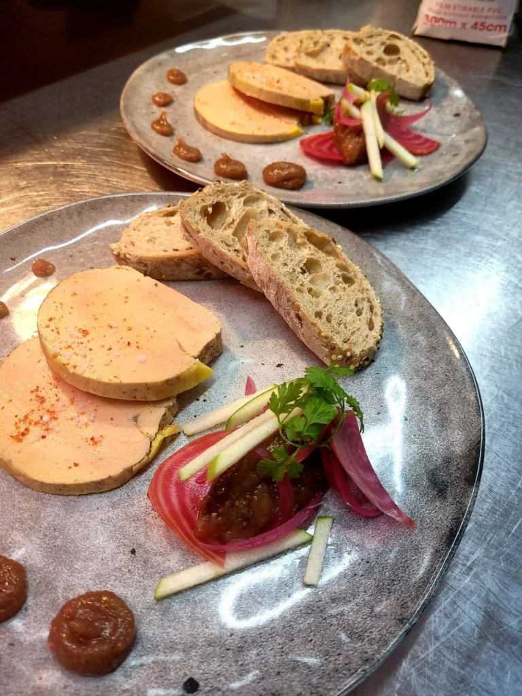
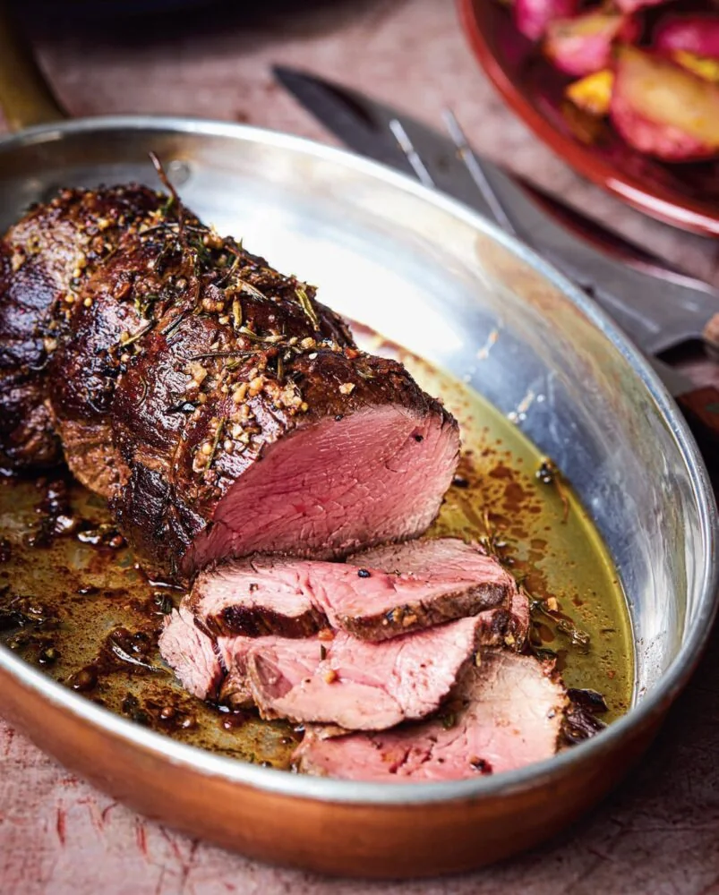
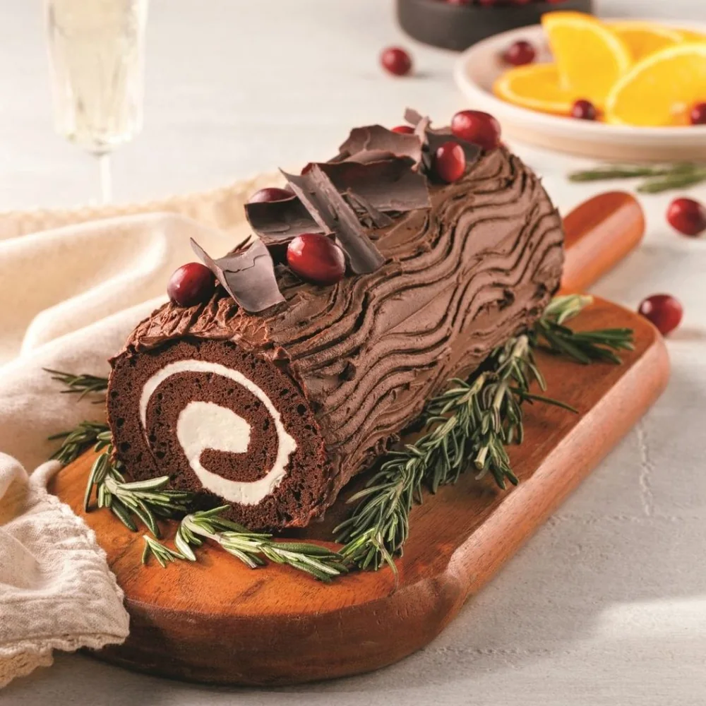
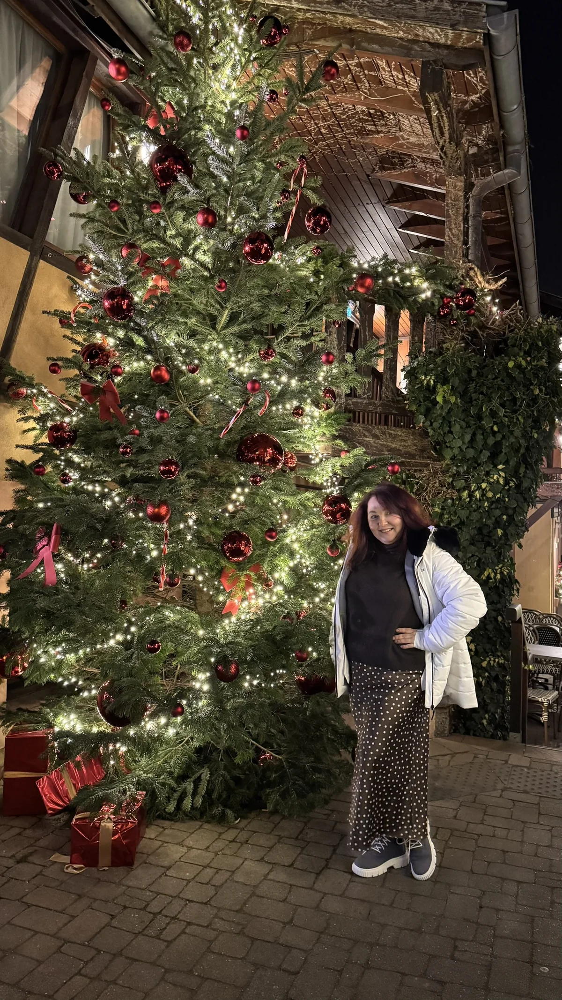

Авторский мини-тур • группа 6 человек
Рождество
в долине Луары
Королевские замки, рождественские интерьеры, подземные галереи, луарские вина и барочная музыка
3–6 декабря 20264 дня / 3 ночиОтель 4★ в Туре
1450 €с человека при двухместном размещении
Декабрь в долине Луары
Рождество по-королевски, но без суеты
В начале декабря замки Луары меняются: появляются ёлки, световые композиции и праздничные интерьеры, а туристический поток становится значительно спокойнее.
Это не автобусная экскурсия и не гонка по максимальному числу замков. Всего шесть участников — чтобы двигаться комфортно, останавливаться там, где действительно интересно, и сохранять ощущение личного путешествия.
Рождественские Шамбор и Шенонсо
Обед в пещере-троглодите
Подземные галереи и дегустация
Барочный вечер в историческом театре
Мини-группа всего 6 человек
Атмосфера путешествия
Тёплый свет внутри королевских стен
Рождественская Луара
Видео из поездки
Программа
Четыре дня, собранные как красивый спектакль
День 13 декабря
Амбуаз и Леонардо
Встречаемся на вокзале Тура и отправляемся в Амбуаз — к французскому Ренессансу и королевскому двору Франциска I.
Королевский замок Амбуаз
История Франции, панорамы Луары и праздничные интерьеры одной из ключевых королевских резиденций региона.
Обед в пещере-троглодите
Камерное пространство, вырубленное в мягком белом туфе — том самом камне, из которого построены многие замки Луары.
Кло-Люсе
Последний дом Леонардо да Винчи, его парк и модели изобретений. Вечером — возвращение в Тур, отель 4★ и свободное время.

День 24 декабря
Тур, ремёсла и Шамбор
Утро в историческом Туре: фахверковые дома, площадь Плюмеро, собор и старые улицы.
Musée du Compagnonnage
Музей французских мастеров и ремесленных братств с виртуозными работами столяров, каменщиков, кузнецов и кровельщиков.
Рождественский Шамбор
Самый масштабный замок Луары, знаменитая двойная лестница, ёлки, свет и праздничные композиции. После возвращения — свободный вечер.

День 35 декабря
Шенонсо, вино и музыка
Самый элегантный день путешествия — история женщин Шенонсо, подземная Луара и красивый музыкальный финал.
Шенонсо — «женский замок»
Диана де Пуатье, Екатерина Медичи, Луиза Лотарингская и мадам Дюпен. В декабре интерьеры дополняет знаменитая рождественская флористика.
Caves Monmousseau
Подземные галереи, праздничные иммерсивные инсталляции и дегустация луарских вин.
20:00 — Grand Théâtre de Tours
Pergolèse — Stabat Mater • Vivaldi — Gloria. Оркестр, хор и солисты в историческом зале.
День 46 декабря
Спокойное завершение
Завтрак в отеле и свободное утро в Туре. Можно пройтись по центру, выпить кофе, купить подарки или просто провести несколько спокойных часов перед отъездом.

Вкус путешествия
Французский декабрь за красивым столом
В программе остаётся место для собственных гастрономических открытий: уютные рестораны Тура, сезонные блюда, вино и тот самый неторопливый вечер после замков.




Ваш автор и сопровождающая
Наталья Валье
Я обожаю показывать Францию — не только её знаменитые замки, но и настроение каждого места.
Мне важны красивые дороги, маленькие города, локальная кухня, истории людей и моменты, когда можно остановиться и действительно почувствовать регион. Поэтому мои путешествия проходят в маленьких группах, без гонки и с вниманием к деталям.
До встречи во Франции.
В стоимость входит
Всё главное уже организовано
- 3 ночи в отеле 4★ в Туре при двухместном размещении
- завтраки в отеле
- транспорт по маршруту программы
- сопровождение и организация путешествия
- входные билеты в Амбуаз, Кло-Люсе, Musée du Compagnonnage, Шамбор и Шенонсо
- Caves Monmousseau и дегустация
- билет на концерт Pergolèse / Vivaldi в Grand Théâtre de Tours
Дополнительно оплачивается
Личные расходы и покупки; обеды и ужины, если они отдельно не обозначены как включённые; проезд до Тура и обратно.
Рождество во Франции
Увидеть Луару в её самом красивом зимнем наряде
Замки, музыка, вино и четыре дня, в которых есть место и впечатлениям, и уюту.
3–6 декабря 2026 • 1450 €